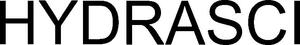

Trade Mark Journal No.2025/031 1 August 2025
WO0000001864217 (5,32)
Office of origin: Norway
Date of International Registration:4 June 2025
Date of designation in the UK:
4 June 2025

International priority date claimed: 4 December 2024
(Norway)
(202413659)
- Class 5
- Beverages adapted for medical purposes; vitamin fortified beverages for medical purposes; vitamins; vitamins and vitamin preparations; dietary supplements consisting of vitamins; dietary supplements consisting of amino acids, minerals and trace elements; health food supplements made principally of minerals; dietary supplements for human beings; food supplements consisting of trace elements; dietary supplements consisting of amino acids; dietary supplements with a cosmetic effect; protein powder dietary supplements; dietary supplement drinks; powdered fruit-flavored dietary supplement drink mix; vitamin and mineral dietary supplements; mineral dietary supplements for humans; health food supplements made principally of vitamins; liquid herbal supplements; vitamin enriched water for medical purposes.
- Class 32
- Beverages containing vitamins; flavoured carbonated beverages; carbonated beverages, non-alcoholic; non-alcoholic flavored carbonated beverages; vitamin fortified non-alcoholic beverages; mineral and aerated waters and other non-alcoholic beverages; waters; fruit flavoured waters; nutritionally fortified water; aerated water; mineral and aerated waters; aerated water [soda water].
GOOD FOR ME AS
Representative: ONSAGERS AS, Postboks 1813 Vika, N-0123 OSLO, NORWAY